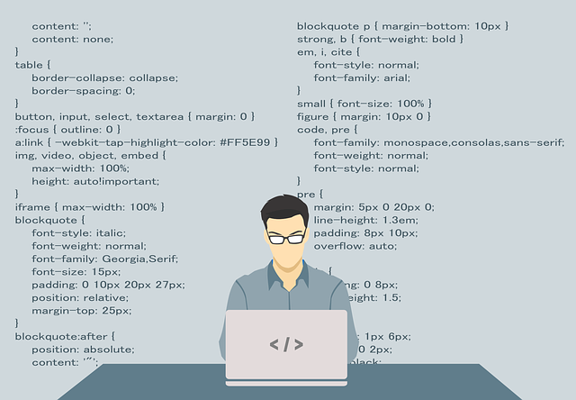

WSServer
A small, fast, configurable, extendable WebSocket server.
WSServer is configurable using a JSON configuration file. The server can be configured in a vast number of ways.
Configuration

We further strive to have as much code covered as possible.
Code Coverage
We strive to keep the source code well commented. Moreover we autogenerate documentation of the source code.
Documentation
WSServer is highly extendable. You can add your own extensions and subprotocols as long as they adhere to a simple API.
Extendability